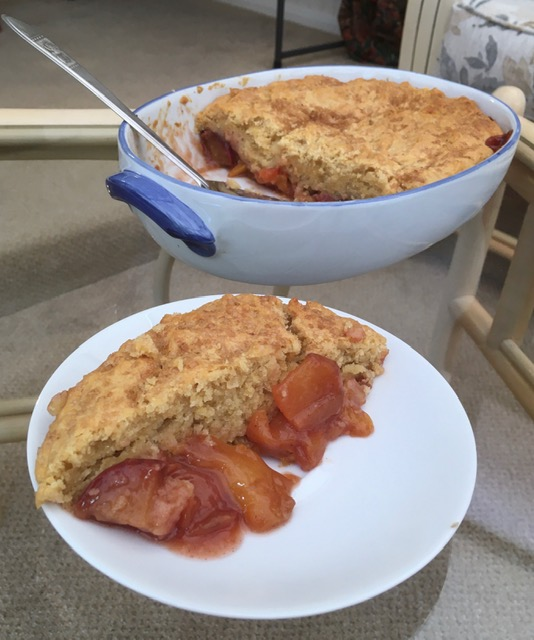

Peach Cobbler
Ingredients:
-
7-8 Fresh Peaches
-
1 tbsp of Granulated Sugar
-
1 tbsp of Light Brown Sugar
-
1/4 tsp of Cinnamon
-
1 tsp of Fresh Lemon Juice or Substitute
-
1 tsp of Vanilla Extract
-
2 tsp of Cornstarch
-
2 Cups of All-Purpose Flour
-
Another 1 tbsp of Granulated Sugar
-
Another 1 tbsp of Light Brown Sugar
-
2 tsp of Baking Powder
-
1/2 tsp of Salt
-
12 tbsp of Unsalted Butter
-
1/2 Cup of Boiling Water
-
For Sprinkling: 1 tbsp of Granulated Sugar

Method:
-
In a large bowl, combine the peaches, granulated sugar, light brown sugar, cinnamon, nutmeg, lemon
juice, and cornstarch. Coat evenly, and pour into a baking dish. Bake in preheated oven for 10
minutes.
-
Meanwhile, prepare cobbler topping: in a large bowl, combine flour, sugar, baking powder, and salt.
-
Blend in butter with your fingertips, or a pastry blender, until mixture resembles coarse meal. Stir
in water until just combined.
-
Remove peaches from the oven, and drop spoonfuls of topping over them.
-
Sprinkle entire cobbler with the sugar. Bake until topping is golden, about 30 minutes.